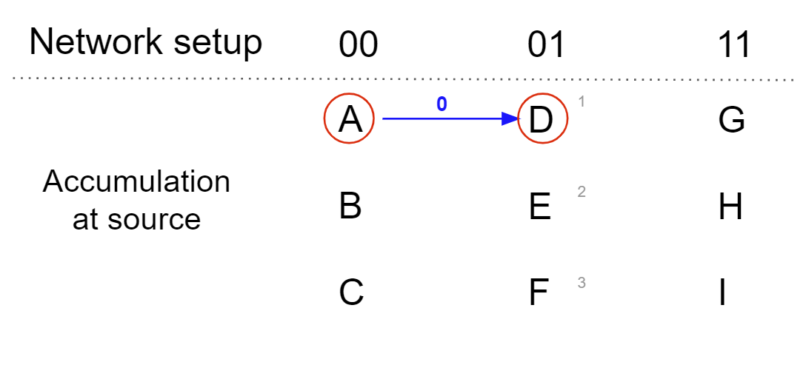

Message Relay & SMR
Summary
Sending and / or receiving a new message from a source to a destination
Status
Message relay - Alpha 2 / SMR - Fleming
How it works
Traversal Logic
While nodes only maintain an awareness of their neighbouring nodes, and connect when necessary, if a message needs to travel across the network out with its neighbouring nodes, how do messages reach their destination? The current mechanism is passing a message between two distant sections relies on a chain of relay nodes, one per section, across the network. All of the relaying nodes then pass the message to all of the relaying nodes in the next hop (jumping across sections) making it certain that the message will make it to the recipient,
For a node to message another node, the source node needs to know the destination nodes address, which also indicates the prefix section it’s in. If the source can’t send directly to the destination, it identifies the closest prefix possible from it's knowledge of neighbouring sections.
So in the first example below (the first box) the source node (MN) is in prefix 1111 and wants to send to the destination node in prefix 0000. Because it can’t send it directly, source node identifies that it’s neighbour (111) is the next closest to the destination. The message is sent from 1111 > 111 (first hop).
Then the process starts again. Section 111, if can’t send directly to the destination, it identifies the closest prefix possible from it's knowledge of neighbouring sections (it’s neighbouring sections are 011, 101, 110). 111 therefore sends to 011 (second hop).
The process repeats. Section 011 looks at its neighbours (001, 010, 111) and identifies 001 as the next closet (third hop).
Finally 001 is able to send the message to 000 (final hop to destination) and on to the destination node itself.
Using the same logic, you can see how a message is sent from a section to a section (2nd box) and also from a group to another group (3rd box).
But why do we need messages to be sent to three different types of destinations? To expand, we’ve listed out a few example scenarios for when a particular destination type is used:
- Send to a node - only concerns that node
- Send to a section - accepting a new node into the section
- Send to a group - storing a piece of data
By using this logic, we can now understand message relay.
Message Relay
We’ll run through an example to help us understand message relay.
Here we are sending a node (A) in section 00 to a node (X) in section 11.
When any node tries to send a message, it must first accumulate information that is required to send the message (hence it’s called the Accumulating Node). In addition to the message, it also has to have a quorum of signatures from the other nodes in its Section to confirm that it is validly allowed to send a message. That quorum is defined as a simple majority of nodes in a Section (so in this example, there are 6 nodes. If B & C signs it, it reaches quorum. By getting a Quorum of signatures, it proves that it is a trusted sender in the eyes of the Network. If the node did not have a quorum of signatures from its Section, it would simply be an untrusted message as you can’t trust a single node (which could be malicious).
A now has a quorum of its signatures. A being in Section 00 identifies its neighbour as 10. In that Section, node is passed the message to G as it's closest to the hash to the message. G now has it. This is classed as a ‘hop’. Once it is as G in Section 10, she now identifies her neighbour as 11 where is where the destination X lives. This is passed over and now with message relay is complete.
As you see Section 01 is greyed out. This is because the message doesn't need to traverse to that section to get to its destination.
Messages that traverse the Alpha 2 Network currently don’t require a quorum of signatures. This means that any malicious node could generate fictitious keypair identities for nodes that it claims are valid nodes in Sections further back in the message chain - and the recipient would have no way of checking this.
In the above example as 11 does not know 00 they are not aware of the member list of 00. Therefore, G could create false key pairs which look like nodes from section 00 (ie with the prefix 00). G could send a message to X claiming it was from A and X has no way to validate this.
Secure message relay mitigates this as a quorum of 01 will have signed the member list of 00 and these signatures will be attached to the message. As X knows and trust the members of 01 their signatures on the membership of 00 provides validity to the message coming from a true A.
We’ll now go into this in more detail.
Secure Message Relay (SMR)
So Secure Message Relay in Fleming gives the SAFE Network a way of ensuring that any messages sent across isolated parts of the Network (via hops through Neighbours) can be verified as trustworthy - enabling the Network to scale infinitely without weakening the trust requirements. This is not a problem that any other project today has been able to solve (as far as we are aware).
In simple terms: SMR simply a chain of trust / validating the senders (not the message)
Before we go any further we’ll discuss Accumulation and Routes briefly.
Accumulation
Each message requires a quorum of signatures in order that it can be trusted by the recipient.
There are two options here on quorum:
Accumulating at source = collating at source Accumulating at destination = collating at destination
In the Network we use the first option as it takes less messages and is more efficient.
Here is an example:
As you can see, the accumulation at source is a simpler route with less messages and is more efficient. The accumulation at destination, the network is firing messages through any means possible in hope one lands and is acknowledged by the destination node.
Routes
| Pierre Chevalier: Also to keep in mind that for Fleming we're not using disjoint routes but rather "n-to-n" communications (probably between 1/3 of elders in each section) |
How do the nodes know they have the correct message? Let’s use another example. The message sender is Section 00 and A is the accumulating node. The next step is G which is determined by which node is closest (XOR) to the hash of the message. Closeness to a hash is used to balance load across the network.
To avoid a single point of failure, the source will send a message to a destination and they will wait for an ACK. ACK (acknowledgement) is quorum at the destination that the message has got through. If the source does not receive an ACK within a given time frame, the source will keep trying until one is received.
Routing of messages on SAFE is subject to time limits to ensure the Network is working as intended and to ensure that false messages are not transferred. You can't lie about receiving an ACK. If they don't get an ACK, the section will choose another node and different route. In the example below, the blue line represents the first route however no ACK was received. As the ranking is defined by XOR, the 2nd attempt on route 2 is then defined on the 2nd closest XOR in each section.
This process continues until an ACK is received.
 |
Nadia Burborough: subject to time limits one of the fundamentals is 'we will not use time' in the network - just something to be cautious of when stating 'timelimits'. I know there are various time limits used - I just don't know if they are here to stay or all just an interim measure? 'You can't lie about receiving an ACK.' -- really? |
Routes Convergence
This is when routes are happening in different hops.

This example above is Section 00 sending a message to Section 11. A is the accumulating node and sending it through D. However, D in Section 01 is malicious and doesn't send the message to the given destination 11.
However in a network of disjoint sections we have churn. So the nodes are not static in each section. So in the example below, Section 01 has received a new node X. The next Node, B, then tries to send the message again but as now X is first in the list so it hits D again.
Secure Message Relay
Each time a section performs churn they notify their neighbours of any updates to their section info. Once a neighbour has the new info each member performs validations on this change, passes it through PARSEC and signs the PARSEC event. Quorum needs to be reached, then these signed events are attached the neighbour info.
When a single node is sending a messages this signed neighbour info is attached so the destination can validate the sender even though they are not neighbours. This info includes the signatures of known and trusted nodes as well as the key pairs of the sender (in this example) this means no node along the journey can falsify the message or its sender.
- Our info: what we know in our section
- Their Knowledge: what your neighbours know about you as far as we know
- Neighbour info: what we know about our neighbours
- Successors: Successors are added to the meta-info, to show the sequence of section versions from the version indicated in TheirInfo and the current version. This is done in case the neighbours have a differing version of our section than the sending section believes
This is best explained through an example, please see below:
Worked example
--------------------------------------|-----------------------------------------
Network set up | This is the given network set up.
|
Pfx-10 { | Here we can see we have 4 Prf. Sections
/* Nodes: A(was added in A4) .. */ | with nodes A, B, C & D.
|
- Our-Infos: | If we take PrfSec 10, we see the nodes is A
A1,A2,A3,A4,A5 | and was added when they were at version A4.
- Their-Knowledge: |
00-A2, 11-A4 | In our section 10, we know that we’re on A5.
- Neighbour-Infos: |
11(B3)-A3, 10(C4)-A2 | Our neighbours 00 know we’re on A2 & 11 A4.
} | You can see they don't have the most up to
| date information and this is due to churn.
Pfx-11 { |
/* Nodes: B(was added in B2) .. */ | We know we signed B3 in Section 11 and C4 in 10.
|
- Our-Infos: |
B1,B2,B3,B4 |
- Their-Knowledge: |
10-B2, 01-B3 |
- Neighbour-Infos: |
10(A5)-B3, 01(D4)-B3 |
} |
|
Pfx-00 { |
/* Nodes: C(was added in C3) .. */ |
|
- Our-Infos: |
C1,C2,C3,C4,C5 |
- Their-Knowledge: |
01-C2, 10-C3 |
- Neighbour-Infos: |
10(A3)-C1, 01(D4)-C3 |
} |
|
Pfx-01 { |
/* Nodes: D(was added in D4) .. */ |
|
- Our-Infos: |
D1,D2,D3,D4,D5 |
- Their-Knowledge: |
00-D3, 11-D3 |
- Neighbour-Infos: |
00(C3)-D2, 11(B4)-D4 |
} |
|
--------------------------------------|-----------------------------------------
Q: Quorum |
PS: ProvingSections |
M: Message |
|
M { | Here is the message. So the src (source) is
src: MN(A) | a MN (managednode) A. We know A is in PfxSec 10.
dst: PfxSec(01) | Dst (destination) is were the node is going.
content: “Bye” | In this instance it's going to PrxSec 01.
} |
| This example means we’re going from a
| ManagedNode to a Prefix Section.
meta-info { |
src_section: None | The meta info is empty at the moment.
sigs_of_msg: None |
PS: Empty |
} |
|
--------------------------------------|-----------------------------------------
Start at A (prf. 10) | The source is a ManagedNode A therefore it does not
| need to receive Q before it goes on its journey.
Node A can sign the message |
--------------------------------------|-----------------------------------------
| Neighbours are sections with 1 change in the
| prefix. For example, in this instance,
A needs to get to 01, therefore uses | 00 is a neighbour of 10, as is 00 is a
00 (its neighbour) as a hop. | neighbour of 01. (destination). 01 and 10
| are not neighbours as 2 changes are needed
| in the digits.
| This example, section 11 is ignored as its
| not required to traverse.
--------------------------------------|-----------------------------------------
| Pfx-10
| {
In 00, A identifies C as its closest | /* Nodes: A(was added in A4) .. */
in hash. |
| - Our-Infos: A1,A2,A3,A4,A5
PS::sigs (A4, Q of A4 sign A5), | - Their-Knowledge: 00-A2, 11-A4
forward proofs | - Neighbour-Infos: 11(B3)-A3, 10(C4)-A2
PS::sigs (A3, Q of A3 sign A4), | }
PS::sigs (A2, Q of A2 sign A3), |
PS::successor(A3), reverse proof | A knows from Their_Know that 00 knows up to A2.
PS::successor(A4), | A therefore attaches signatures up to A2 &
PS::successor(A5) | successors up it its latest version, A5
| so it can make sure the most up to date V is sent over.
A then sends “M + meta info” to C |
--------------------------------------|-----------------------------------------
HOP
--------------------------------------|-----------------------------------------
The message now is with C | Pfx-00
| {
C trims from the bottom to the top | /* Nodes: C(was added in C3) .. */
until it gets to where it trusts (A3) |
| - Our-Infos: C1,C2,C3,C4,C5
PS::sigs (A4, Q of A4 sign A5), | - Their-Knowledge: 01-C2, 10-C3
PS::sigs (A3, Q of A3 sign A4) | - Neighbour-Infos: 10(A3)-C1, 01(D4)-C3
PS:: successors (A3) |
| In the Neigh_Info, we see that C knows
C can then relay this as it trusts | about up to A3 in section 10 (the previous
up to A3 | section from where the message came from).
|
| By removing the excess (trimming) the message
| ready to send. Trimming removes the unnecessary
| information, he only needs up to what he trusts.
| Ask, do i trust (Y/n) keep going to I trust
| don't need to go any further.
--------------------------------------|-----------------------------------------
| Pfx-00
C calculates the next hop as D in 01 | {
(the destination). | /* Nodes: C(was added in C3) .. */
|
PS::sigs (A4, Q of A4 sign A5), | - Our-Infos: C1,C2,C3,C4,C5
PS::sigs (A3, Q of A3 sign A4), | - Their-Knowledge: 01-C2, 10-C3
PS:: successors (A3) | - Neighbour-Infos: 10(A3)-C1, 01(D4)-C3
PS::sigs (C1, Q of C1 sign A3) |
PS:: successor (C2) | We know that A3 has been signed by C1 from
PS:: successor (C3) | the Neigh_info in the network set up
PS:: successor (C4) |
PS:: successor (C5) | In this section we know up to C5 so we must
| add in Successors up to that version however
We can now relay to D in 01 | they know up to C2 so that must be included,
| so up to their knowledge and current versions.
--------------------------------------|-----------------------------------------
HOP
--------------------------------------|-----------------------------------------
The message is now in D |
| Pfx-01 {
D trims to the point it trusts | /* Nodes: D(was added in D4) .. */
|
PS::sigs (A4, Q of A4 sign A5), | - Our-Infos: D1,D2,D3,D4,D5
PS::sigs (A3, Q of A3 sign A4), | - Their-Knowledge: 00-D3, 11-D3
PS:: successors (A3) | - Neighbour-Infos: 00(C3)-D2, 11(B4)-D4
PS::sigs (C1, Q of C1 sign A3) |
PS:: successor (C2) | D knows up to C3 from the previous section
PS:: successor (C3) |
|
D now has the following info: |
|
M { |
src: MN(A) |
dst: PfxSec(01) |
content: “Bye” |
} |
|
meta-info A5 |
src_section: sigs from Q of A5 for M |
(add in prf to add the sec info) |
sigs_of_msg: |
|
PS::sigs (A4, Q of A4 sign A5), |
PS::sigs (A3, Q of A3 sign A4), |
PS:: successors (A3) |
PS::sigs (C1, Q of C1 sign A3) |
PS:: successor (C2) |
PS:: successor (C3) |
} |
|
Validation: |
|
C3 is known | By going through the validation process,
C3 is the successor of C2 | starting from the bottom, it checks it
C2 is the successor of C1 | has all the relevant info to be able to
A3 is signed by Q of C1 | trust the message. D can trust the message M
C1 signs A3 | is genuine and from a genuine source section 10
A3 signs A4 |
A4 signs A5 |
|
|
A5 is the src_section which signd the |
message M. |
--------------------------------------|-----------------------------------------
D swarms the message to all in Pfx.01 | Swarm this section as the destination is
| labeled as 01, so all nodes need the message
--------------------------------------|-----------------------------------------
Features
- Validation at the point of destination to ensure the meta info is correct and therefore is trustworthy
- Digital signatures
- Quorum
- Routes
Benefits
- It is a secure way to make sure only non-malicious communications are being sent across a dynamic network